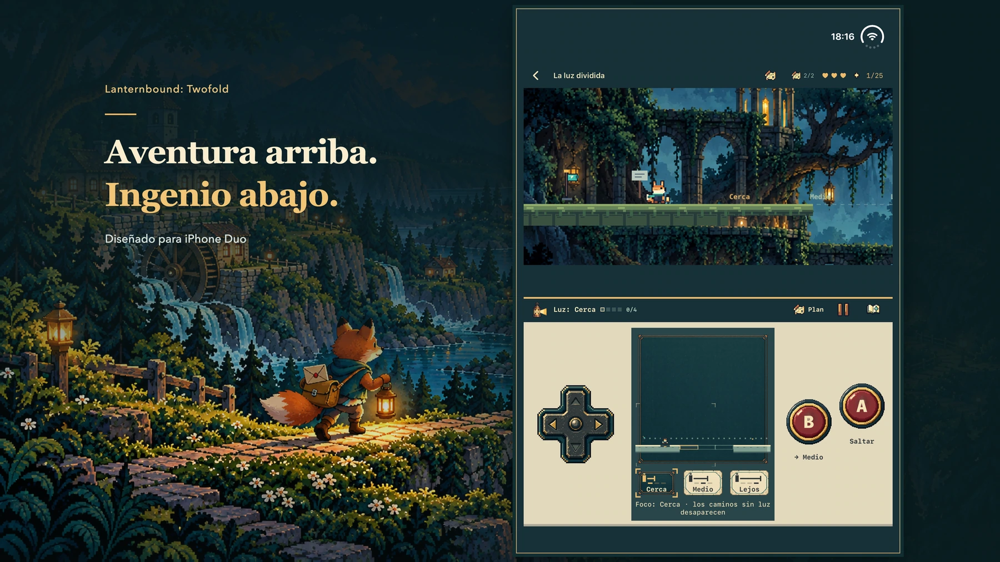

Una aventura para iPhone Duo
Dos pantallas. Doce caminos a casa.
Lleva doce cartas por un valle olvidado. Tu farol descubre el camino y las vidas que esperan al otro lado.
Descubre cómo se juega
Ilustración promocional; más abajo, imágenes reales del juego.
Cada carta abre un camino.
La tormenta rompió las carreteras. El nuevo mapa dejó algunas casas atrás. Eres un joven zorro cartero que lleva mensajes entre vecinos y una carta personal para su mentor, que ha dejado de responder. Cada entrega conduce a la siguiente. Entrega las doce cartas principales para llegar al final completo y vuelve después a descubrir qué ha cambiado.

iPhone Duo
La aventura arriba. Tu próximo movimiento abajo.
El mundo ocupa la zona superior; abajo están el mapa, los instrumentos y los controles. Orienta la pantalla interior con el mundo sobre los controles. Las configuraciones planas compatibles conservan esta disposición.
- Muévete con la cruceta, salta con A y usa el instrumento actual con B.
- Abre el plan para pausar la acción y estudiar la ruta; vuelve al juego cuando estés listo.
- Prepara un mecanismo abajo y supera el salto arriba. Tus decisiones cambian los caminos disponibles.
No sigas solo el camino evidente.
Busca marcas de polilla que llevan a pasadizos oscuros. Sube hacia otra ruta, baja a un túnel o entra en una sala oculta. Cada capítulo esconde dos recuerdos opcionales con pequeñas historias propias.


Aprende uno. Combina dos.
Revela caminos con luz, toca una campana con el bumerán, detén una plataforma, gira un espejo o deja un eco sobre un interruptor. Cada capítulo reutiliza su instrumento en cuatro desafíos principales y enlaza dos herramientas concretas en puzles por etapas. Algunos desvíos cambian el orden.


Duo 2.0 · Preparando el lanzamiento · Fecha de lanzamiento por confirmar
Una aventura completa. Una sola compra.
Una aventura de pago diseñada ante todo para iPhone Duo. Una compra incluye los doce capítulos, sin anuncios, suscripciones ni compras integradas. Precio previsto en EE. UU.: 9,99 USD. Los precios locales y la disponibilidad aparecerán en la ficha oficial del App Store.